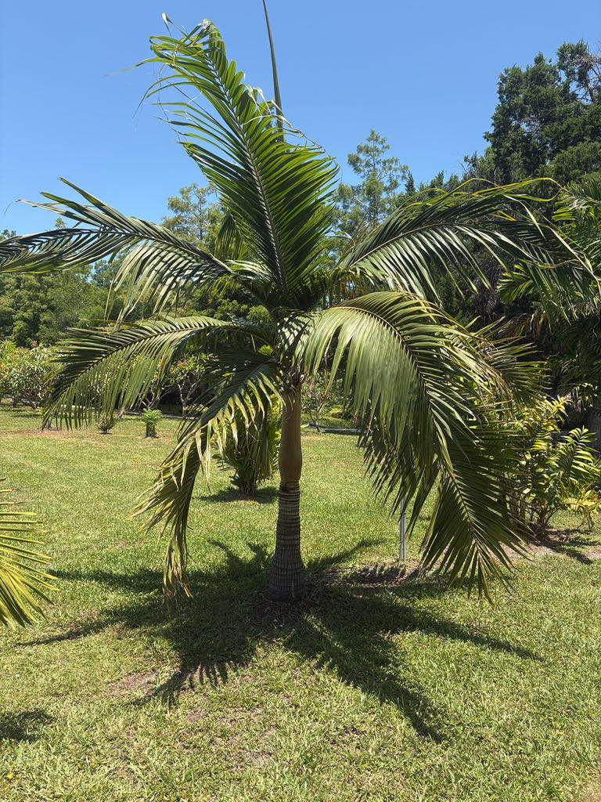

- One of its three wild varieties is already gone. In late 2024, the last known wild individual of the Round Island variety — Dictyosperma album var. conjugatum — was blown down in a windstorm on tiny Round Island off Mauritius. The variety is now extinct in the wild, surviving only in cultivation thanks to seeds collected by conservationists decades earlier.
- Heavy harvesting of the edible heart drove wild populations of the Mauritius and Réunion variety to near-collapse — and removing the heart kills the tree. So a palm famous for surviving tropical storms proved far more vulnerable to a knife than to a hurricane.
- Dictyosperma is a monotypic genus — Dictyosperma album is its only species — and its name tells you exactly what it looks like. The species epithet album is Latin for 'white,' a direct reference to the pale wax coating the crownshaft. The genus name comes from the Greek for 'net' and 'seed,' describing the netted pattern on the seed surface.
- Two features give this palm away from across the garden. New fronds emerge as rigid upright spears — green lances standing straight before they unfurl — and below the crown sits that distinctive waxy, pale crownshaft, like a collar marking where trunk ends and canopy begins.
The Hurricane Palm is native exclusively to the Mascarene Islands — Mauritius, Réunion, and Rodrigues — a small volcanic archipelago in the Indian Ocean east of Madagascar. There it grows in coastal and upland forests, in warm, humid conditions with regular rainfall. It is the sole member of the genus Dictyosperma, found nowhere else in the wild.
Three botanical varieties are formally recognized, each tied to its own island: var. album from Mauritius and Réunion, var. aureum from Rodrigues, and var. conjugatum from Round Island, a tiny islet off Mauritius.
All three are threatened or critically endangered in the wild, driven to the brink by a combination of pressures including harvesting of the edible palm heart, habitat loss, and — especially on Round Island — the introduction of invasive animals that destroyed seedlings and regeneration.
In Florida, the species arrived as an ornamental introduction and is now grown throughout the southern part of the state, where it is valued for its elegant form and genuine wind resistance.
- The Hurricane Palm is monoecious, meaning male and female flowers are borne on the same inflorescence — unlike dioecious palms where each individual tree is strictly one sex. Several horse-tail-like inflorescences, each up to about a meter long, emerge in a ring below the crownshaft.
- The small white to yellowish-brown flowers are followed by ovoid fruits that ripen to purple or black, each containing a single seed.
- In its native Mascarenes the palm is a valued food plant: the apical bud — the heart — is edible cooked, and it has been harvested for this purpose for generations. That harvest is precisely what drove wild populations of the Mauritius and Réunion variety toward extinction, since removing the heart kills the palm.
- One variety — Dictyosperma album var. conjugatum, endemic to Round Island — was lost from the wild in late 2024. Its collapse was driven primarily by invasive rabbits and goats introduced in the 19th century, which consumed seedlings and stripped topsoil until natural regeneration became impossible.
- Conservation teams had collected seeds from the last individuals in the early 1990s, so the genetic lineage survives in cultivation.
- It is a reminder that 'common in gardens' and 'safe in nature' are very different things — and that cultivated material, while valuable, is not a substitute for a wild population with its full ecological context and genetic provenance.
In the Hurricane Palm's native Mascarene Islands, the long-blooming inflorescences serve as a nectar resource for insects, and seeds are dispersed by birds and bats, linking the palm into the broader food web of its island ecosystem.
In Florida cultivation, the wildlife picture is more modest. The inflorescences attract generalist pollinators — bees and other nectar-seeking insects — and the small purple-black fruits may be taken by birds. Because the species has no evolutionary history with Florida's native fauna, it does not function as a butterfly or moth larval host.
Its value here is primarily as a general nectar and fruit resource rather than as a specialist host plant.
Propagation is primarily by seed. The palm is monoecious — male and female flowers are borne on the same inflorescence on every individual — so any mature, flowering tree can potentially set fruit. Seeds require consistent warmth to germinate and can take several months; the fleshy fruit pulp is reported to contain germination-inhibiting compounds and should be fully removed before sowing.
Several inflorescences per tree emerge in a ring below the crownshaft, each branching into a rooster-tail or horse-tail shape up to about a meter long. Individual flowers are small and white to yellowish-brown. Male flowers open before female flowers on the same inflorescence — a timing gap that reduces self-pollination.
Small, ovoid drupes, roughly 1.5 to 2 cm long, ripening from green to purple or black. Each contains a single brown, ellipsoidal seed. The fruit is not considered edible.
Pinnate (feather-shaped), 2.5 to 3 meters long, with 50 to 70 lance-shaped leaflets on each side of the rachis, closely spaced and arching. The crown typically holds 20 to 30 leaves. New leaves emerge as stiff vertical spears — one of the most recognizable features of this species.
The crownshaft is prominent and swollen at the base, covered in pale wax and fine brown hairs — giving the palm its species name album, Latin for 'white.' Color varies from green to white, grey, or brown depending on the variety. The trunk is solitary, gray, and ringed with leaf-scar bands, with a slight swelling at the base.
It is self-cleaning: old fronds shed without leaving persistent stubs or boots, and this same frond-shedding is precisely what earns the palm its common name — in high winds, fronds detach cleanly, dramatically reducing the surface area the storm can grab.
Start at the top: look for the distinctive pale, waxy crownshaft sitting like a collar between the trunk and the spreading crown of arching fronds. The trunk below is clean, solitary, and neatly ringed — no persistent dead fronds, no boots — and the overall silhouette is upright and refined. Notice the new fronds emerging as upright green spears before they unfurl.
If the palm is in bloom, look for the multiple horse-tail-shaped flower stalks ringing the trunk just beneath the crownshaft. Ripe fruit, if present, will be small purple-black ovals clustered along those stalks.
The small purple-black fruit is not considered edible and has no culinary value, but it is not known to be toxic to people, dogs, or cats — non-toxic does not mean edible, and the fruit should not be eaten.
The apical bud (the growing heart at the center of the crown) is edible when cooked and has been harvested as a food source in the palm's native Mascarene Islands, though doing so kills the tree; that harvesting pressure is a major reason wild populations of the Mauritius and Réunion variety are nearly gone.
Worth knowing before you shop: the nursery trade color names for the three varieties are counterintuitive. Var. album (from Mauritius and Réunion) is often sold as the 'Red Palm,' var. aureum (from Rodrigues) as the 'White' or 'Yellow,' and var. conjugatum (from Round Island) by similar color descriptors.
These labels refer to subtle differences in crownshaft and new-leaf coloration — they are nursery trade shorthand, not universally accepted botanical terms, though all three are formally recognized as botanical varieties by Kew's Plants of the World Online.
Bradenton is near the cooler edge of where this tropical palm can be grown reliably outdoors. It tolerates brief cool spells better than prolonged cold; extended periods of cool temperatures — particularly sustained nights below 40°F — can cause foliage to yellow and spot, and a hard frost will cause significant damage. Planting in a sheltered microclimate gives the best results at this latitude.
The root system of established specimens is sensitive and does not transplant well; choose the planting site carefully and establish the palm in place from the start.


- © Randall Carter (CC-BY-NC), via iNaturalist